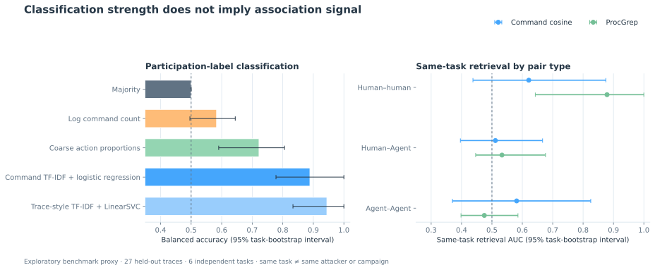

quickstart.py会话轨迹分析from attackagent_detect import TraceDetector
# Analyze commands and tool calls
detector = TraceDetector()
result = detector.analyze("session.jsonl")
print(result.mode, result.signals)
# "ai_agent", ["tool_calls", "retry_pattern"]一份日志，不止一种执行方式。
从执行方式、行为信号到轨迹关联。交互演示使用模拟日志。
同样的任务，不同的执行痕迹。切换执行者，查看判断线索。
session.jsonl模拟输入执行线索🥷 Human
交互式终端输入、命令间停顿与手动修正。
tty=pts/0
interactive=true
correction=manual⚙️ Script
定时启动、重复命令序列与固定重试间隔。
parent=cron
batch=true
retry=fixed_interval🤖 AI agent
助手规划、结构化工具调用与基于反馈的重试。
role=assistant
finish_reason=tool_calls
retry=feedback_driven信号示意，并非在线模型判定。公开基准当前仅覆盖人类与模型 Agent 轨迹。
一条命令不够。把规划、调用、返回与重试看成一段连续行为。
- Plan检查目标
role=assistant - Call调用终端工具
tool=bash - Result读取失败反馈
exit=1 - Retry调整后再次调用
attempt=2
模拟 Agent 工具调用序列
跨执行方式比较行为。轨迹相似提供检查线索，不等于同一攻击者。
对比两段会话
🥷 Human
lscatgrepcat🤖 AI agent
lscatgrepcat等待比较这组模拟轨迹
不同日志来源，统一轨迹格式。预览终端、调度、审计与 Agent 记录的接入方式。
| 来源 | 可观测字段 | 执行上下文 | 预览 |
|---|---|---|---|
| Shell history | command, tty, timestamp | 🥷 Human | |
| Cron / batch | schedule, pid, exit_code | ⚙️ Script | |
| Agent tool calls | role, tool_call_id, result | 🤖 AI agent | |
| Audit events | EXECVE, ppid, uid | 需结合上下文 |
接入方式为产品规划示意。当前复现流程只读取固定版本 InterCode-CTF 归档，尚未开放任意日志接入。
研究目标
测量人工、脚本与 Agent 执行对攻击活动关联的影响。当前公开实验只有人类操作记录与模型 Agent 工具调用，暂无匹配的脚本执行样本。
分类分数高，
不代表关联有效。
跨来源人类与 Agent 同题检索接近随机；标签与日志采集方式完全混杂。

! 本轮仅比较人类与 Agent，缺少脚本样本；两类标签又与日志采集方式绑定。结果不代表现实攻击者识别能力。
数据与方法
数据：Offensive Cybersecurity Time Horizons / InterCode-CTF。版本：178c0da。
当前输入为固定版本 InterCode-CTF 压缩轨迹：从人类终端输入和 Agent 的 bash 工具调用提取命令名与动作类别；不执行命令，也不读取任意 auditd / Sysmon 日志。Python 工具调用不纳入主特征。同题仅作代理标签。
从源码复现实验
当前可用：从源码复现
Python 3.10+，无需 Conda。先下载固定版本的公开轨迹，再运行分析与一致性检查。PyPI 计划于 2027 年开放。
源码复现
git clone https://github.com/mcxiaoxiao/AttackAgentDetect.git
cd AttackAgentDetect
python3 -m venv .venv
.venv/bin/python -m pip install -r requirements.lock.txt
.venv/bin/python scripts/download_public_traces.py
.venv/bin/python scripts/run_all.py结果摘录 / quick-summary.json测试集：6 个任务
{
"sessions": { "human": 47, "model_agent": 194, "script": 0 },
"test": {
"held_out_tasks": 6,
"mode_classifier": { "balanced_accuracy": 0.889 },
"same_task_retrieval": { "pair": "human-agent", "auc": 0.511 }
}
}